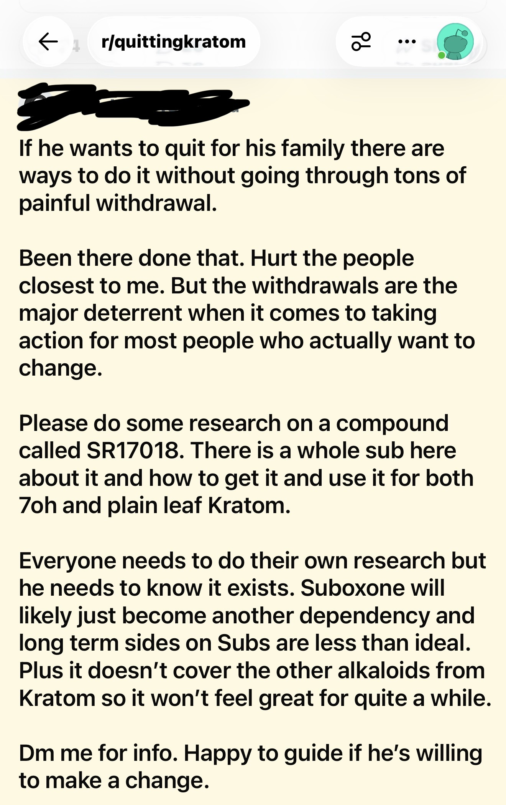

If kratom isn't addictive, why is there now a market for quitting it?
For years, lawmakers were told a simple story: kratom isn't really addictive. Withdrawal is mild. People can stop whenever they want.
Advocacy organizations repeated this message in legislative hearings, media interviews, and lobbying campaigns across the United States. Many lawmakers believed them.
Today, the internet tells a different story — and the evidence isn't coming from government agencies or addiction specialists. It's coming from kratom users themselves.
If kratom is not creating a meaningful dependence problem, why is there a growing market for products and services intended to help people stop using it?
That question is the central contradiction this article explores.
What is SR‑17018?
SR‑17018 is an experimental opioid‑like compound that has been discussed online by some kratom users as a way to manage tolerance, withdrawal, or dependence. It is not approved by the FDA or any regulatory body. Its safety, efficacy, and long‑term effects are unknown.
While SR‑17018 is one piece of this story, the bigger picture is the ecosystem that has grown around it — and what that ecosystem reveals about kratom dependence.
“Has Anyone Ever Heard of It?”

In March, a member of a Facebook group dedicated to quitting kratom described discovering something called SR‑17018 while researching kratom and 7‑hydroxymitragynine.
The individual had never heard of it.
After searching Reddit and Google, they found something surprising.
Not scientific papers. Not medical guidance. Not addiction treatment programs.
Instead, they found large numbers of people discussing how to use SR‑17018 to quit kratom.
The question was no longer whether kratom causes withdrawal. The discussion had already moved on to how to escape it.
If dependence were truly rare, why would thousands of people be searching for specialized compounds to help them stop?
Building an Underground Treatment Community


As more people learned about SR‑17018, a pattern emerged.
Users weren't asking whether kratom withdrawal existed. They were asking:
- Where can I buy SR‑17018?
- How do I use it?
- What dosing schedule works best?
- Which vendor is legitimate?
Entire conversations developed around obtaining products, designing taper schedules, and helping others stop using kratom.
The existence of these discussions creates an uncomfortable contradiction:
If whole‑leaf kratom is as easy to quit as advocates claimed, why are thousands of people searching for specialized compounds to help them stop?
The New Promise



Users began describing SR‑17018 in extraordinary terms.
One claimed it allowed them to stop high‑dose kratom with almost no withdrawal. Another recommended it instead of Suboxone. A third called it a “miracle substance.”
The language should sound familiar.
Because it mirrors many of the same claims once made about kratom itself.
A new compound had appeared. A new community had formed. And a new set of promises was being made.
This pattern — a substance promoted as a solution to dependence — raises a fundamental question:
If kratom is not creating a dependence problem, why are users turning to experimental compounds to manage withdrawal?
From Recovery Discussions to Consumer Products


The most remarkable development is what happened next.
The demand became commercialized.
Branded products appeared online.
- “Reset.”
- “Monster SR.”
- “Reset4Good.”
Recovery‑themed packaging. Flavor options. Retail pricing. Online storefronts.
What began as discussions among users evolved into a market.
A market whose purpose was not helping people start kratom. A market whose purpose was helping people stop.
Would such a market exist if kratom dependence were truly uncommon?
Crowdsourced Detox Protocols

Users began sharing detailed taper schedules.
Switch from kratom to SR‑17018. Remain on SR‑17018. Slowly taper SR‑17018.
Adjust doses. Reduce symptoms. Avoid withdrawal.
The discussions increasingly resembled addiction‑treatment forums.
Not wellness forums. Not supplement forums. Addiction‑treatment forums.
Because the central problem being discussed was withdrawal.
Then Came the Questions About SR‑17018


Eventually, some users began asking a new question.
What happens when you stop the thing you started taking to stop kratom?
Posts appeared discussing:
- Chills
- Gastrointestinal symptoms
- Insomnia
- Post‑acute withdrawal symptoms
- Difficulty sleeping weeks after discontinuation
The irony is difficult to miss.
A community formed to escape kratom dependence. Then parts of that same community began discussing recovery after stopping SR‑17018.
What Lawmakers Were Told Versus What Happened
For years, lawmakers heard that kratom was different.
Not like opioids. Not significantly addictive. Not associated with serious withdrawal. Not something that justified strict regulation.
Yet today there are:
- Facebook groups dedicated to quitting kratom
- Reddit communities discussing withdrawal management
- Detailed taper schedules
- Peer‑to‑peer recovery coaching
- Retail products marketed for quitting
- Entire discussions focused on obtaining compounds to reduce withdrawal symptoms
None of these things emerge in a vacuum.
They emerge when a large enough population is struggling with dependence that a market opportunity appears.
The most striking thing about SR‑17018 is not the compound itself. It is what its existence reveals.
A consumer market has emerged specifically to help people stop using whole‑leaf kratom.
That market would not exist if the problem advocates described to lawmakers were the same problem users were experiencing in real life.
The story of SR‑17018 is therefore not primarily a story about SR‑17018. It is a story about kratom.
That is the contradiction lawmakers should examine: If dependence is rare, why is there now a withdrawal market? And if that market exists, what does it mean for the credibility of claims that kratom is safe and non‑addictive?